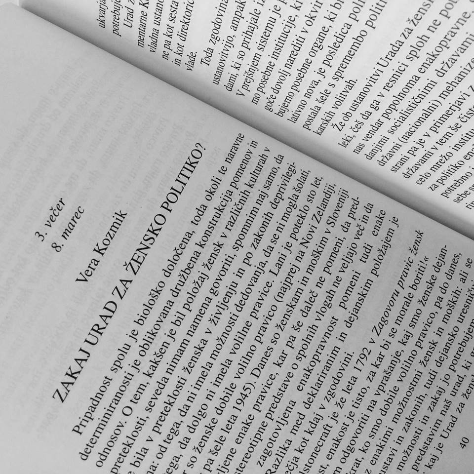

Ženske so v Sloveniji dobile volilno pravico leta 1945 in se takrat začele ukvarjati s politiko. Najprej so volilno pravico dobile samske in izobražene ženske. Pomembno vlogo pri vključevanju žensk v politiko so imele avtonomne ženske skupine. Statistika kaže, da se je razlika med spoloma zmanjšala in je prišlo do napredka, tudi zaradi uvedbe spolnih kvot in nastanka novih strank, saj je bilo v vladah do leta 2008 40% manj žensk kot danes. Na prvih parlamentarnih volitvah je bilo od 90 poslancev le 12 žensk, na zadnjih volitvah pa je bilo v parlament izvoljenih rekordnih 36% žensk. Kljub temu je delež žensk na višjih položajih v politiki še vedno nizek, saj je bila do zdaj izvoljena le ena predsednica vlade.
Raziskave so pokazale, da se ženske v politiki usmerjene bolj na področja dela in socialne politike. Namen povečanja žensk v parlamentih je prav zaradi manjše obravnave nekaterih področij politike, v katera so ženske usmerjene.
